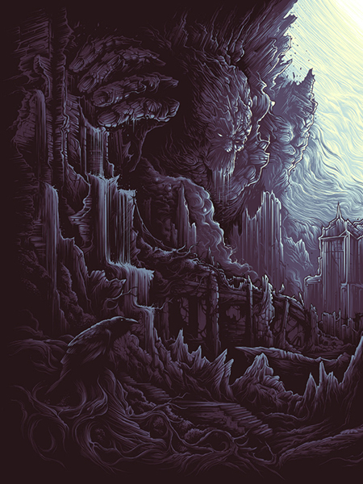

DAN MUMFORD
Can you start by telling us about who you are, what you specialize in and where you’re from?
My name is Dan Mumford, i am an illustrator/screen printer and i live in London.
I know you had formalized study in illustration, did you always plan to do band art or was that just a natural progression? How did this shape the way and style in which you work?
It was very much a natural progression for me, i was playing in local bands when i was younger so i always knew people in bands and when i got asked to work for some friends it just seemed like a natural thing to combine music and art, my work has just grown out of that really.
Do you keep a sketchbook? Do the contents typically evolve into your finished work or is it more a collection of loose ideas and doodles?
No, i really should sketch more though, the digital age has made me a lot less dependent on the classic pen and paper, and i tend to sketch out ideas on the computer a lot more than i ever used to. But ideas and sketches do end up being used in final pieces sometimes yes, just not as much i would probably like!
How do you approach a project from start to finish? Are you 100% digital or is there paper involved?
It depends on the project involved, a lot of the time recently my work has been completely digital, but i am heading back to doing more work with pen and pencil in the future, there is something you cant beat about the control, but at the same time working on a tablet is great for quick jobs.
Are your tools any different now than when you started? Do you have any favorites or old standbys?
I use the same sort of pens and paper that i have done for the last few years, i dont really feel the need to change up the technique i use for hand drawing at the moment, apart from the move to working digitally with a tablet and cs3, my techniques not changed all that much over the years, i think i have just got a bit quicker!
Do you work in Photoshop or Illustrator? How has that changed the way you draw or finish a piece?
Yeah i use both for various things. It has changed the process a lot actually, learning how to use photoshop properly and learning how to use a tablet has changed my working times and the way i go about creating a piece quite a bit. If anything it has sped up the process for me, i think the ability to use both is invaluable for an illustrator.

Are there any common obstacles you run into as a result of your process?
Repetition and typography, type has always been my weakest skill, and im working on making my type skills a bit better, but i do still like to focus on the artwork itself. Repetition wise, i just get asked to do a lot of the same thing again and again, and its just a bit boring sometimes, its always nice when a client has seen what ive done and then asks for something completely different, its a breath of fresh air.
What’s been influencing your work lately?
A lot of old movies and ideas from the 80’s, i try not to reference the present too much, im far more interested in sci-fi/action movies from the 80’s and 90’s, theres something special about that time period for film, and growing up it really shaped me, so its nice to revisit those ideas now!
Do you keep a morgue file or any other reference around?
Not really, i tend to use my self or people in the studio for reference, that or there is always google, but its nice to not rely on google for reference images, everyone does it nowadays so you can end up seeing the same images cropping up in designs.
Do you typically work from ideas you already have or do the ideas come after talking with the client?
No, generally its from ideas that the clients have, its always nice to be thrown the seed of an idea, and then be able to elaborate on their idea and put my own spin on it. Even if its just a word or a theme, its always nice to have some sort of idea of where the client would want to take the project.
When you’re working is it a locked down kind of process, chained to your desk, or more casual with friends coming and going?
Well, generally i sketch out things in a big block and get all my roughs out of the way over the process of a week, then i will go through and turn those ideas into final pieces. The sketching process is quite laid back, a lot of procrastinating etc, but when i am locked into the actual design part, i tend to do long 12 hour days in the studio etc, but i dont generally end up working away into the night, its the nice part about working in a studio, i have to go home at some point and leave the work!
Where would you like to be with your illustration 5 and 10 years from now?
I would like to be creating work in the same sort of style, but hopefully have a bit more freedom with what i am doing, probably just creating work more for myself and creating a lot more prints, and at the very least just making a living, i still find it crazy that i can make a living from this, its a great job.
Have you ever had to walk away from a project / client relationship going south? What was that like?
Yeah, a few times. Its not a nice experience, generally its amicable, just because its not going the way the client wants it to, but ive had a couple of jobs where i have just felt like a puppet trying to create what the art director has in his mind, and its just not fun in any way, you have to question your integrity and decide if its something you really want to do.
Do you have anything coming up you’re excited about, or recent favorite projects?
My recent batch of black dahlia murder tees was great fun and came out really well, and coming up i have a new project that im working on thats hopefully very exciting, i cant say much about it, but all should be revealed in the next few months, its a nice change of pace for me.
I think the shark devouring the ship thing you did for Gallows is probably my favorite. How did this come about?
Well, it was the follow up single to abandon ship, so we thought it would be nice to keep the second single in the same style and theme as the first. Thus rather than a giant sea squid, its a giant shark! That and the name of the song was ‘in the belly of a shark’. hahaha, not quite as imaginative as you might hope! but the design came out real nice, and it was definitely one of my favorite projects to work on.
Do you have any favorite things to draw? I see a lot of sharks and tentacles in your stuff. Is that what your sketchbook is full of?
Not really, thats more to do with the client base, its the style and theme that the music scene is essentially asking for most of the time! Obviously i enjoy drawing that sort of stuff, but im far more interested in natural looking shapes, and beautiful linework than the grim side of things.
What have you been listening to lately? Are you an iPod or vinyl kind of guy?
Im most definitely an ipod guy, 100%. Vinyl is great for the artwork, but i really dont care about the better audio quality. I get the feeling in the age of mp3 download codes with vinyl purchases, that most vinyl doesn’t ever really get played anyway, which is a shame. But you cant beat the size of vinyl packaging.
Are there any other illustrators you think we should check out?
Theres too many, Godmachine, Ben Lande, Joshua Belanger, Chad Lenjer, Brian Morries, Drew Millward, The black Axe, Greg Abbot, Wil Exley, Charlie Duck….and many more..but thats a good start!